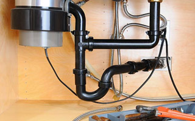

Kitchen Plumbing - Alan Laird Plumbing
Alan Laird Plumbing is proud to offer comprehensive kitchen plumbing services in Hanford, CA. From water lines and gas lines to garbage disposal installation and kitchen remodel projects, our professional plumbers can do it all. We are proud of the services that we offer in Hanford. We are dedicated to our customers’ complete satisfaction and to the quality of our workmanship.
You probably use your kitchen every single day to cook meals and clean dishes. The plumbing system that keeps it running is critical to your home’s functioning. That’s why Alan Laird Plumbing provides fast and reliable plumbing services. From slow drains to leaking water lines, our Hanford plumbers can do it all. We can fix any kitchen plumbing component from a broken garbage disposal to a clogged sink or a faulty dishwasher.
If your kitchen plumbing system is experiencing any types of problems, it’s always best to call for the repair services of a professional. Not only can performing plumbing repairs pose a danger to your health, you can also cause damage to your plumbing system.
No matter what kind of kitchen plumbing issues you’re having, we can help. We take great care to respect our customers’ homes and to treat them honestly. We would love to help you repair any of your kitchen components or help you install a new system that will work well for as long as possible.
Call us today to learn more about the kitchen plumbing services we offer in Hanford, CA.
Alan Laird Plumbing - Hanford Water Heater Installation
Your water heater is an important device in your home, providing ample hot water for your entire family on a daily basis. So, when selecting a new water heater, it’s important that you choose one that will provide enough hot water during peak hours without costing a fortune to operate.
Our Hanford area customers expect and enjoy the high-quality hot water heater installation and repair services that we provide at Alan Laird Plumbing. We pride ourselves in being thorough and reliable plumbers helping local homeowners throughout the Hanford area providing expert installation services performed by local master plumbers. Our installation, repair, and replacement services are second to none, making us your number one option for your water heater repairs throughout the Hanford and Kings County area.
For all of your Hanford water heater installation needs, call the experts at Alan Laird Plumbing. We can help you select the right water heater for your home and then install it properly so it works as intended for years to come.
Quality Services Our Hanford Plumbers Offer
- Plumbing Repairs
- Residential Plumbing
- New Home Plumbing
- Drain Cleaning
- Faucet Installation
- Leak Detection
- Home Repiping
- Toilet Repair
- Bathroom Plumbing
- Kitchen Plumbing
- Drain Repair
- Slab Leaks
We Provide Residential Plumbing in The Following Towns in Kings County:
Hanford Plumbers | Kings County Plumbers | Visalia Plumbers | Lemoore Plumbers | Armona Plumbers | Pitco Plumbers | Lemoore Station Plumbers | Stratford Plumbers | Guernsey Plumbers | Corcoran Plumbers | Halls Corner Plumbers | Tulare Plumbers | Goshen Plumbers | Laton Plumbers | Caruthers Plumbers | Kingsburg Plumbers | Riverdale Plumbers | Selma Plumbers | Reedley Plumbers | Dinuba Plumbers | Huron Plumbers